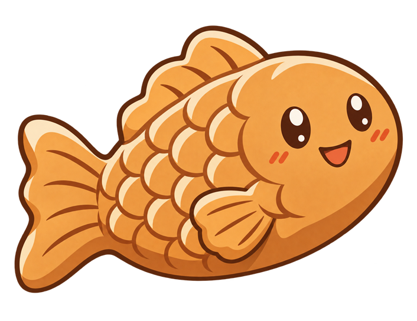
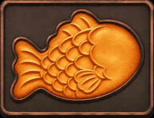
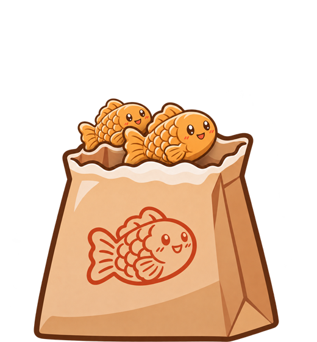
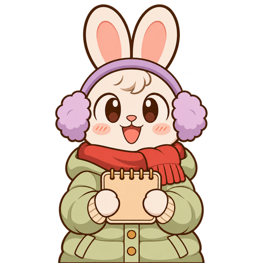
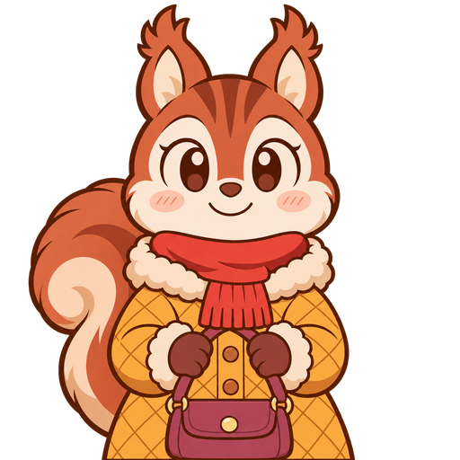

3:00
0
0
😊70

cnation붕어빵 타이쿤
게임 데이터를 불러오는 중입니다... 0%
cnation붕어빵 타이쿤
version ()
게임 방법
붕어빵 굽는 법
- 반죽을 들고 빈 틀을 눌러 반죽을 부어요.
- 팥을 들고 반죽 위를 눌러 팥을 올려요.
- 꼬챙이로 눌러 뒤집어요. 한쪽이 익으면 한 번 더 뒤집어요.

노릇해지면 꼬챙이로 눌러 봉투에 담아요. 너무 오래 두면 타요!
주문한 개수만큼 담기면 봉투를 눌러 건네요.
스토리 모드
- 겨울 보름(Day 1~15) 동안 붕어빵 가게를 꾸려요. 하루 장사는 45~80초이고, 날이 갈수록 손님이 많아지고 주문도 커져요.
- 화면 위의 😊 만족도는 70%에서 시작해요. 빨리 건네면 오르고(5명 연속이면 보너스), 오래 기다리게 하면 오르지 않거나 내려가요. 손님이 떠나면 -12(특별 손님은 -15), 붕어빵을 태우면 -3, 안 시킨 종류를 건네면 -4예요. 80%가 넘으면 오르는 양이 절반이 돼요.
- "다 익었어요!"가 뜨자마자 꺼낸 완벽한 붕어빵만 건네면 만족도가 조금 더 올라요.
- 틀은 처음에 4개, Day 2에 6개, Day 5에 9개로 늘어나요.
- 손님은 줄을 서요. 항상 맨 앞 손님에게 건네고, 뒤에 선 손님일수록 천천히 지쳐요. 뒤 손님 머리 위 주문표로 무엇을 미리 구울지 정해요.
- 봉투를 한 번 누를 때마다 한 개씩 건네요. 말풍선 아래에 남은 개수가 보여요. 다 받은 손님이 떠나기 전에 더 누르면 덤으로 나가요(돈은 못 받아요).
- Day 4부터 슈크림 메뉴가 생겨요. 반죽 위에 슈크림을 올려 구우면 슈크림 봉투에 담겨요. 안 시킨 종류를 건네면 손님이 돌려주고 만족도가 조금 내려가요. Day 8부터는 섞어서 시키는 손님도 와요.
- 장사가 끝나면 상점에서 번 돈으로 가게를 업그레이드할 수 있어요. 간판과 가격 인상은 더 벌 수 있지만 장사가 어려워지니, 자신 있을 때 사세요.
- 만족도가 0%가 되면 게임 오버예요. 그날 처음부터 다시는 스토리 모드에서 딱 한 번 쓸 수 있고, 다시 한 날은 그날 순이익의 50%를 재기 비용으로 반납해요.
- 동네 사람들이 특별 손님으로 Day 1부터 와요. 종이 두 번 울리고 말풍선 위에 이름표가 붙어요. 사람마다 규칙이 달라요. 맨 아래 손님 소개에서 확인해 보세요!
- Day 15까지 마치면 만족도에 따라 엔딩이 달라지고, 그때 가진 돈으로 랭킹에 올라가요.
- 하루가 시작될 때 자동으로 저장돼요. 장사 도중에 나가면 다음에 그날 아침부터 다시 해요.
3분 챌린지
- 3분 챌린지는 3분 동안 최대한 많이 파는 속도전이에요. 팥만 굽거나, 팥 & 슈크림을 함께 구울지 골라서 시작해요. 동물 손님만 와요.
- 아침 → 노을 → 밤으로 갈수록 붕어빵이 빨리 익고, 손님도 덜 기다려요.
- 붕어빵은 한 개에 1,000원(슈크림은 1,200원), 반죽을 한 번 부을 때마다 재료비 300원이 들어요.
- 스토리 모드와 같이 봉투를 한 번 누를 때마다 한 개씩 건네요. 말풍선 아래에 남은 개수가 보여요. 팥 & 슈크림에서는 두 가지를 섞어 시키는 손님도 있으니 두 봉투를 모두 건네야 해요.
- 손님 인내심 바가 초록색일 때 건네면 한 개에 200원씩 팁을 받아요.
- 손님을 너무 오래 기다리게 하면 그냥 떠나요.
- 다 익은 붕어빵을 오래 두면 타요. 탄 붕어빵은 꼬챙이로 눌러 치워요.
- 봉투에는 붕어빵을 9개까지 담을 수 있어요.
- 장사가 끝나면 매출 · 팁 · 재료비로 순이익을 계산하고, 10위 안에 들면 이름을 적어 랭킹에 올릴 수 있어요.
- 랭킹은 스토리 모드 · 3분 팥 · 3분 팥 & 슈크림 세 가지로 따로 관리해요. 처음 화면의 랭킹 버튼에서 탭을 눌러 볼 수 있어요.
- 랭킹은 🌏 전체(모든 사람의 기록, 인터넷 필요)와 📱 내 기기(이 기기에서 낸 기록)로 나눠 볼 수 있어요. 랭킹에 올리면 두 곳에 함께 남고, 인터넷이 끊겨 있으면 내 기기에만 남아요.
알아 두면 좋아요
- 장사 중 ⏸ 버튼으로 잠깐 쉴 수 있어요. 3분 챌린지에서는 계속하기 · 처음부터 다시 하기 · 처음 화면으로를, 스토리 모드에서는 계속하기 · 처음 화면으로를 고를 수 있어요.
- 다른 앱으로 나갔다 오면 자동으로 일시정지돼요.
- 🔊 버튼으로 소리를 켜고 끌 수 있어요.
손님 소개
동물 손님 16종 · 3분 챌린지와 스토리 모드에 나와요


동네 사람 13명 · 스토리 모드에만 나와요
- 매일 첫 번째·두 번째 손님은 항상 동물이에요. 세 번째 손님부터 6명 중 1명꼴로 동네 사람이 와요.
- 하루에 한 명(Day 9부터는 두 명)까지, 같은 사람은 하루에 한 번만 와요. 동네 사람이 그냥 떠나면 만족도 -15예요 (나그네는 -20).
택배기사
- 1~2개 주문. 인내심이 보통 손님의 40%뿐이라 아주 급해요.
- 인내심이 60% 넘게 남았을 때 다 건네면 한 개에 600원씩 팁 (보통 손님은 200원).
유치원 원장님
- 6~9개 단체 주문 (Day 1은 70%, Day 2는 85%로 줄여서 와요).
- 인내심이 2.5배라 느긋해요.
- 다 건네면 단체 보너스 3,000원 + 만족도 +3.
동네 할아버지
- 2~3개 주문, 인내심 1.2배.
- 처음 온 날의 주문이 단골 주문이 돼요. 다음부터는 "늘 먹던 걸로"만 말하고 개수가 ?로 가려져요.
- 한 번에 맞게 주면 팁 2배 + 만족도 +3. 틀리면 주문을 다시 알려 줘요.
초등학생 (여자아이)
- 1개 주문. 500원밖에 없어서 500원에 팔아요 (팁 없음).
- 대신 만족도 +2.
초등학생 (남자아이)
- 1~3개 주문.
- 받는 도중에 주문을 한 번 바꿔요 (하나 더 달라거나, 남은 것의 종류를 바꾸거나). 말풍선을 잘 보세요!
윤이 엄마
- 3~5개 주문, 단골이라 30% 싸게 팔아요.
- 기분 좋게 가면 동네에 소문을 내서 30초 동안 손님이 더 자주 와요.
- 한 번이라도 기분 좋게 다녀가면 윤이·현이가 보너스를 줘요.
윤이
- 윤이 엄마의 둘째 아들. 4~6개 주문.
- 엄마가 기분 좋게 다녀간 적이 있으면 팁이 1.5배.
현이
- 윤이 엄마의 첫째 아들. 서울 수방사에서 근무해서 휴가를 자주 나와요.
- 5~8개 주문, 휴가가 짧아 인내심 80%.
- 빨리 건네면 한 개에 400원씩 팁 + 만족도 +3. 엄마가 기분 좋게 다녀갔다면 2,000원 더.
배고픈 나그네
- 1~2개를 달라고 해요. 돈은 받지 못해요 (재료비만 들어요).
- 건네면 만족도 +3.
- 못 주고 떠나면 동네에 나쁜 소문이 나서 만족도 -20! 꼭 챙겨 주세요.
건물주 아저씨
- 주문하지 않아요. 3초 동안 건물 자랑을 실컷 하고 5,000~20,000원 용돈만 주고 가요. 🍀
- 다른 특별 손님보다 3배 드물게 와요. 봉투를 눌러도 안 받아요.
외국인 관광객
- 2~4개 주문, 영어로 말해요.
- 빨리 건네면 한 개에 500원씩 팁.
닭살 커플
- 둘이 나눠 먹는 세트 주문: 팥·슈크림 1개씩 또는 2개씩 (슈크림이 없는 날은 팥 2개).
- 한 번에 맞게 주면 만족도 +4.
- 한 번이라도 잘못 주면 바로 화가 나서 만족도 -6, 보너스도 없어요.
산타 할아버지
- 마지막 날(Day 15)에만, 장사가 3분의 1쯤 지났을 때 딱 한 번 오는 보스예요.
- 16~20개를 팥·슈크림 반반으로 주문해요. 인내심 3배.
- 다 건네면 선물 100,000원 + 만족도 +5. 못 주면 만족도 -15.
제작 : cnation(문명국) · 문의 : mmk75@naver.com
3분 챌린지
3분 동안 최대한 많이 팔아 보세요! 동물 손님만 와요. 어떤 붕어빵으로 도전할까요?
잠깐 쉬는 중
처음 화면으로 나가면 오늘 장사는 저장되지 않고,
다음에 오늘 아침부터 다시 해요.
스토리 모드
겨울 보름(Day 1~15) 동안 손님 만족도를 지키며 붕어빵 가게를 키워 보세요. 엔딩 때 가진 돈으로 랭킹이 정해져요.
새로 시작할까요?
지금까지 진행한 스토리가 지워져요.
Day 1
화면을 터치하면 장사를 시작해요
장사 정산
상점
가진 돈 0원
게임 오버
다시 하기는 스토리 모드에서 딱 한 번만 쓸 수 있어요.
다시 한 날은 그날 순이익의 50%를 재기 비용으로 반납해요.
엔딩
모은 돈0원
손님 만족도0%
다시 하기를 한 번 썼어요.
랭킹
업데이트 기록
제작 : cnation(문명국) · 문의 : mmk75@naver.com
오늘의 장사 정산
판매한 붕어빵0개
판매 매출+0원
손님 팁+0원
재료비 (반죽 1회 300원)-0원
태운 붕어빵 · 놓친 손님0개 · 0명
순이익0원